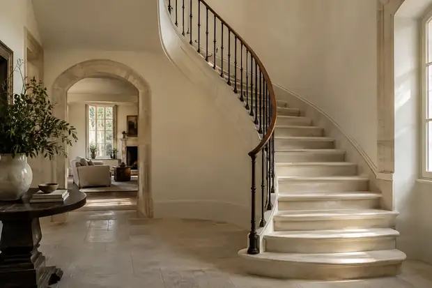

Explore, with context.
Share the finishes you value and the result you hope for. Use the conversation to connect appearance with the written scope. Confirm preparation, application and handover details directly with your provider.
Bring this into your enquiryCompare, with context.
Review samples alongside the materials that remain. Use the conversation to connect appearance with the written scope. Confirm preparation, application and handover details directly with your provider.
Bring this into your enquiryConfirm, with context.
Agree the selected finish and any matching limitations. Use the conversation to connect appearance with the written scope. Confirm preparation, application and handover details directly with your provider.
Bring this into your enquiry